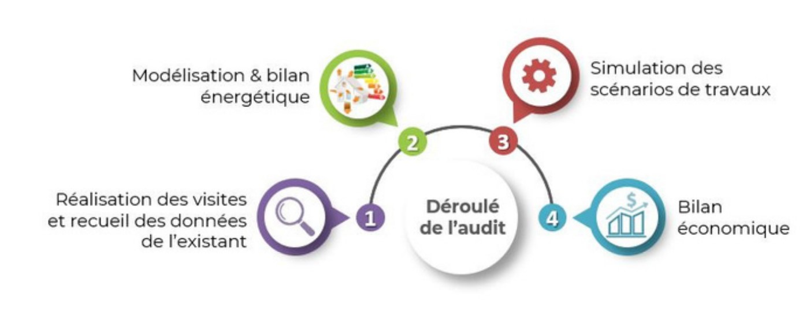
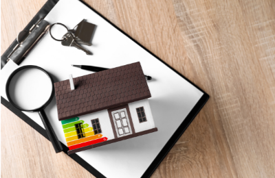
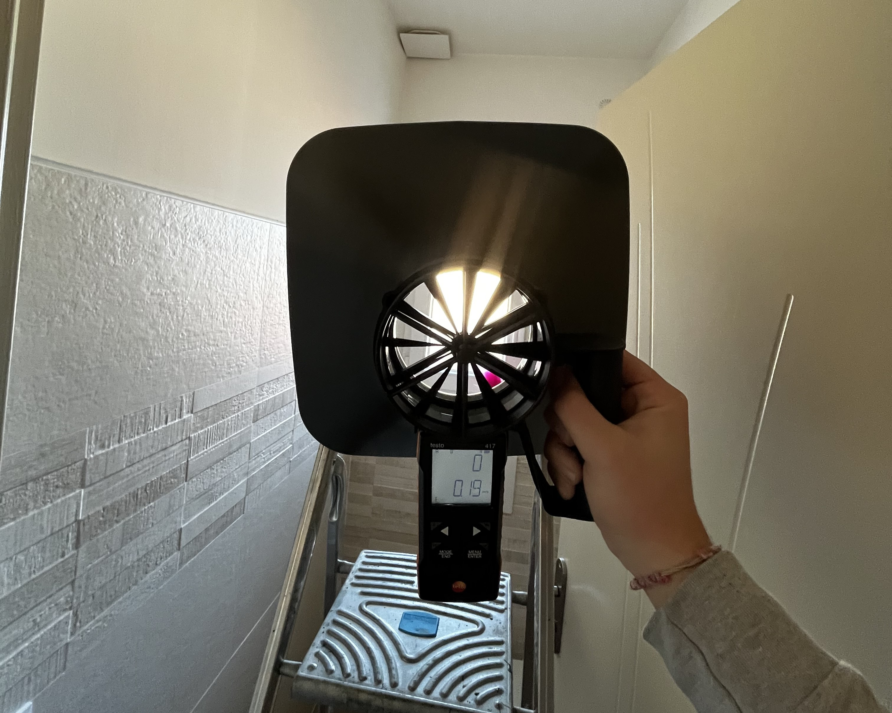

Nos Missions
Audit énergétique

Une étude énergétique complète de votre logement pour évaluer les travaux de rénovation et mesurer leur impact sur la performance énergétique de votre bien. Elle est nécessaire dans le cadre d'une vente immobilière ou pour la conception d'un projet de rénovation performante.

Thermographie

Nous réalisons des diagnostics par thermographie. C'est une méthode d'inspection non destructive qui utilise une caméra thermique pour détecter les variations de température à la surface des bâtiments. Cette technologie permet de repérer des anomalies invisibles à l'œil nu, telles que des ponts thermiques, des infiltrations d'humidité, des défauts d'isolation, ou des fuites d'air.
ACCOMPAGNATEUR RENOV
Un service personnalisé, selon vos besoins et votre situation, pour mener à bien votre projet de rénovation énergétique. Nous accompagnons les ménages pour définir les travaux, informons sur les financements et aidons au suivi de chantier jusqu'à la fin des travaux.
- 🏠 Définition des travaux : visite, diagnostic, préconisations de travaux adaptés
- 🛠️ Conseils pour la sélection des entreprises et choix des devis
- 📄 Appui aux démarches administratives
- 🤝 Aide spécifique pour les ménages en situation de précarité
- 💰 Mobilisation des financements
- ✅ Conseils en fin de chantier
Pathologie

Nous réalisons des diagnostics complets des bâtiments afin de détecter la présence d'humidité, de moisissures, de fuites d'eau ou de dégradations liées à des infiltrations. Ce diagnostic permet de déterminer l'origine des problèmes et de définir les actions à entreprendre.

